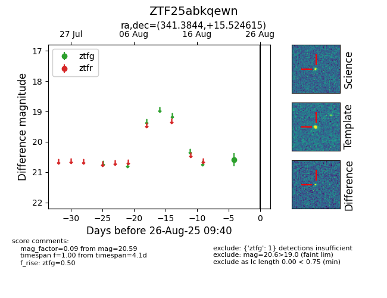

Target ZTF25abkqewn at 2025-08-26 09:40, see:
FINK: fink-portal.org/ZTF25abkqewn
Lasair: lasair-ztf.lsst.ac.uk/objects/ZTF25abkqewn
ALeRCE: alerce.online/object/ZTF25abkqewn
alt names
ZTF25abkqewn (ztf,fink)
coordinates:
equatorial (ra, dec) = (341.3844,+15.52462)
galactic (l, b) = (83.5528,-37.53913)
photometry
last ztfg=20.59
1 ztfg detections
